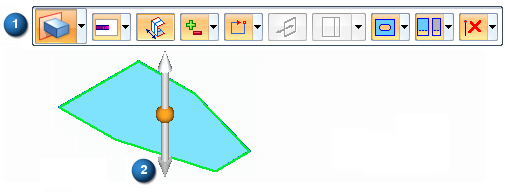
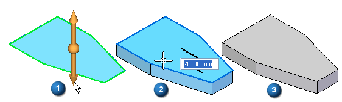

Constructing synchronous extruded features using the Select tool
In the synchronous environment, you can use the Select tool to construct extruded features. When you select a valid sketch element, such as a sketch region, both the Extrude command bar (1) and the extrude handle (2) appear.

The command bar contains the options required to construct a wide variety of extruded features. To start the feature construction process, you position the cursor over the arrow on the extrude handle and click (1).
The cursor shape changes to a cross hair, and a dynamic representation of the feature is displayed, along with a dynamic input box, which allows you to type a precision value for the feature (2).
To finish defining the feature (3), you can click the mouse, or type a value and press Enter.

The sketch elements used to define the feature are moved to the Used Sketches list in PathFinder and hidden. The sketch dimensions are applied to the appropriate model edges.